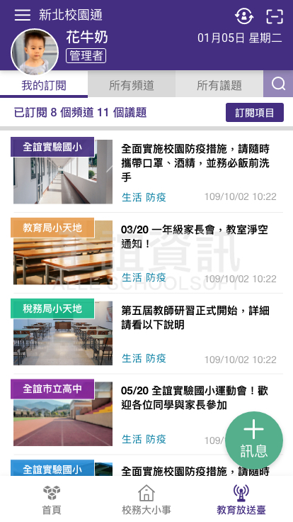
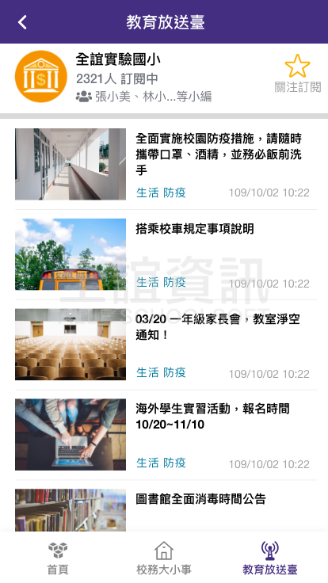
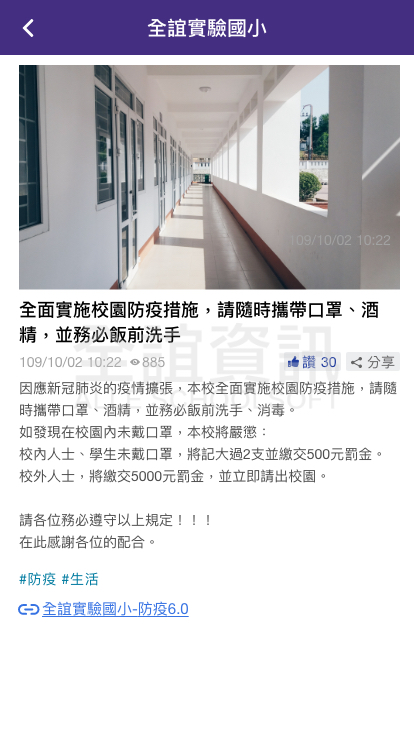
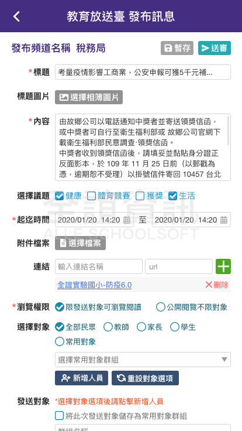

<div class="APP_application_list_class">
    <div class="APP_application_list_title">
      <span class="APP_application_list_title_left">
        <h4>局端推播</h4>  
      </span>
      <span class="APP_application_list_title_right">
        <span class="APP_list_user APP_user_orange">
          學生
        </span>
        <span class="APP_list_user APP_user_green">
          老師
        </span>
        <span class="APP_list_user APP_user_red">
            家長
        </span>
      </span>
      <div class="clear"></div>
    </div>
  
    <div class="APP_application_list_words">
        為一個讓家長與學生可以觀看學校新聞訊息的平台，學校可由此發佈訊息或新聞廣告，並發送推播通知給所選擇的家長與學生，讓他們收到通知後進入觀看。
    </div>
  
    <div class="APP_application_list_pic">
      <span class="APP_list_pic_margin">
        
      </span>
      <span class="APP_list_pic_margin">
        
      </span>
      <span class="APP_list_pic_margin">
        
      </span>
      <span class="APP_list_pic_margin">
        
      </span>
    </div>
  </div>